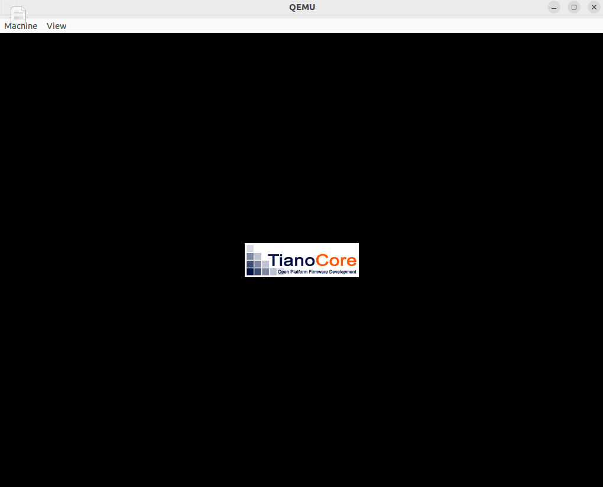
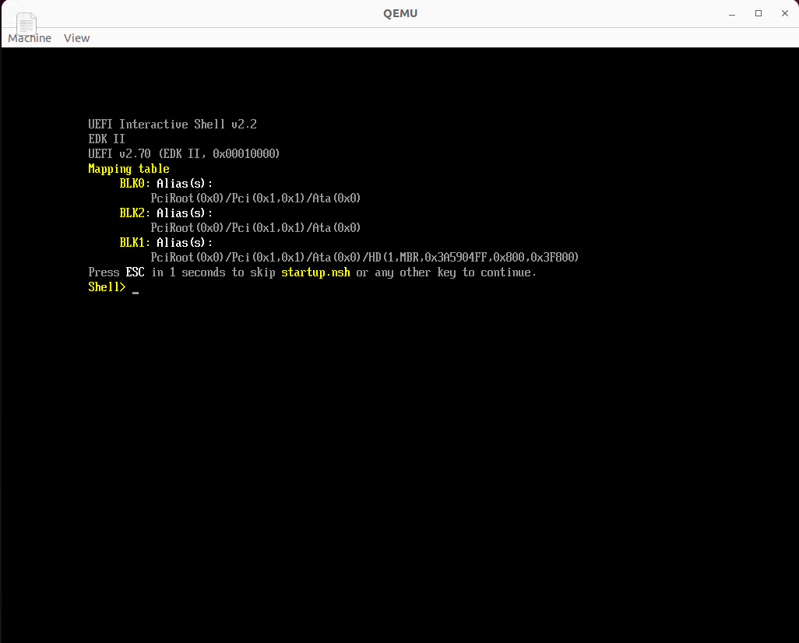

UEFI 开发环境 EDK2 配置
EDK2 是一个开源的 UEFI 实现，使用 EDK2 可以自行编译 UEFI 固件和 UEFI 驱动。
下载代码
直接下载最新版代码（edk2-stable202205），注意使用 –recursive 下载 submodule，不然会出现缺少文件的问题
1
2
3
4
|
set http_proxy = http:
set https_proxy = http:
git clone --recursive https:
|
安装依赖
1
2
| # nasm 需要 2.15 以上版本
apt-get install nasm uuid-dev iasl gcc
|
编译 EDK2 开发环境
step 1: 设置 GCC5
GCC5 是 EDK2 的一个编译链，Conf/tools_def.txt 文件存放了与编译相关的工具，此外还有 GCC48、GCC49 等等，分别对应不同的 GCC 版本，这里需要修改 GCC5 相关的参数，这里有一个坑点，见下面的排坑2
1
2
3
4
| vim Conf/tools_def.txt
DEFINE GCC5_IA32_PREFIX = /usr/bin/
DEFINE GCC5_X64_PREFIX = /usr/bin/
|
step2：编译环境
1
2
3
| make -c BaseTools
source edksetup.sh
build -a X64 -t GCC5
|
编译 OVMF 固件
1
2
3
4
5
6
| build -a X64 -t GCC5 -p OvmfPkg/OvmfPkgX64.dsc
> ls ./Build/OvmfX64/DEBUG_GCC5/FV/
DXEFV.ext DXEFV.Fv.txt FVMAIN_COMPACT.ext FVMAIN_COMPACT.Fv.txt Guid.xref OVMF.fd PEIFV.Fv PEIFV.inf SECFV.Fv.map DXEFV.Fv DXEFV.inf FVMAIN_COMPACT.Fv FVMAIN_COMPACT.inf MEMFD.fd OVMF_VARS.fd PEIFV.Fv.map SECFV.ext SECFV.Fv.txt DXEFV.Fv.map Ffs FVMAIN_COMPACT.Fv.map GuidedSectionTools.txt OVMF_CODE.fd PEIFV.ext PEIFV.Fv.txt SECFV.Fv SECFV.inf
|
使用 qemu 启动 ovmf 固件
qemu-system-x86_64 -bios ./edk2/Build/OvmfX64/DEBUG_GCC5/FV/OVMF.fd -net none -hda hd.img
-net none选项是为了防止 efi 找不到引导磁盘而使用 PXE 网络启动


排坑
make: Trim: 权限不够
一开始看到权限问题以为是需要 root 执行，切换到 root 发现还是一样的问题，然后就有点懵逼。Google 了一圈也没有发现类似的问题，连 Trim 是啥都没有搞清楚，在代码里面搜索了一下发现 Trim 应该是 EDK2 自己实现的一个工具，bash 执行一下：
1
2
3
4
5
6
7
8
9
10
11
12
13
| > Trim
bash: /home/adventural/edk2/BaseTools/BinPipWrappers/PosixLike/Trim: 权限不够
> file /home/adventural/edk2/BaseTools/BinPipWrappers/PosixLike/Trim
/home/adventural/edk2/BaseTools/BinPipWrappers/PosixLike/Trim: Bourne-Again shell script, ASCII text executable
> ll /home/adventural/edk2/BaseTools/BinPipWrappers/PosixLike/Trim
-rw-rw-r-- 1 adventural adventural 466 6月 27 10:24 /home/adventural/edk2/BaseTools/BinPipWrappers/PosixLike/Trim
> chmod a+x /home/adventural/edk2/BaseTools/BinPipWrappers/PosixLike/Trim
|
后来看了一下发现 BaseTools/BinPipWrappers/PosixLike/ 里面的文件全部没有执行权限，全部加上··
1
| chmod a+x /home/adventural/edk2/BaseTools/BinPipWrappers/PosixLike/*
|
GCC5 的问题
一开始我是参考网上的大部分博客配置的 EDK2 开发环境，然而大多都是古老的环境配置，不使用于 22.04。 一开始我把本机的环境设置为 gcc-5，专门下载的老版本，然后一编译直接报错，提示需要 10 版本以上的 gcc，于是直接改用默认的 gcc 11，直接编译成功。